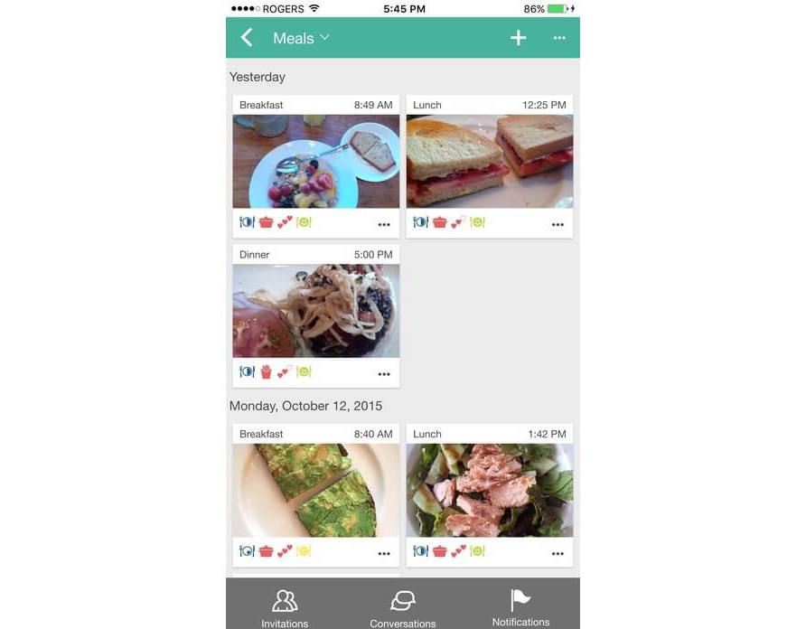
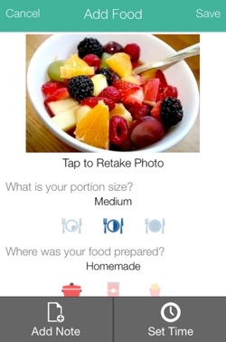
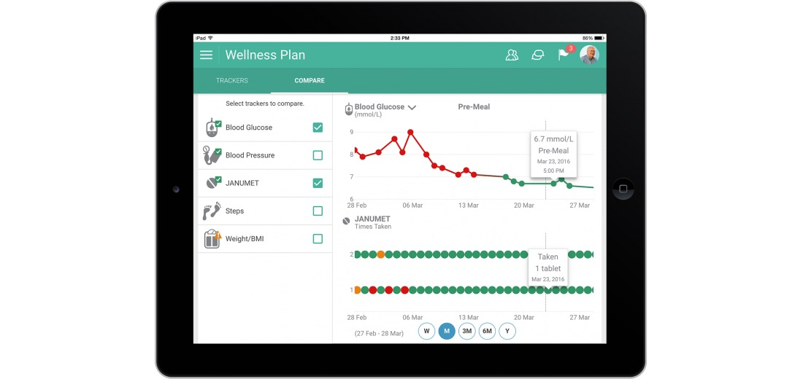
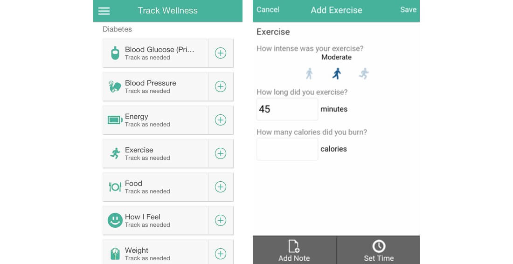
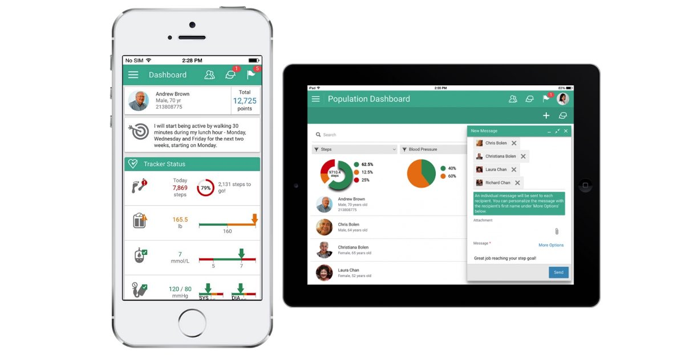
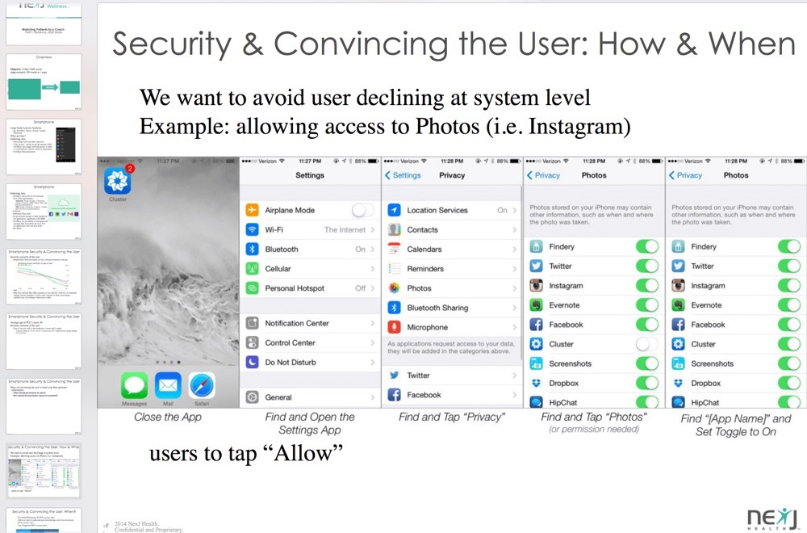

NexJ Connected Wellness is a patient-facing, digital platform for cloud-based population health management. Its goal is to empower patients to actively participate in managing their own health and wellness.
The client wanted to build a web application that had a sleek UI and took advantage of modern best practices and open source ecosystems.
My role was of a frontend developer. This role comprised of adhering and enforcing good UX practices. Google Material Design Guidelines were closely studied and used as a primary reference when making design decisions; although at times it was necessary to stray from the guidelines. At these times, my knowledge of UX/UI design was invaluable.
I worked within a small team of developers, designers and QA's. The developers worked collaboratively with the designers to influence key design decisions based on the amount of developer time required, how beneficial the client would find a particular feature/design and how well the change would fit into the existing user flow.
UX research was conducted by developing and examining user surveys and personas: most users of the application were found to be 50+ in age. This influenced a lot of UX/UI decisions such as the amount of padding needed for buttons and the text size on desktop and mobile. It also affected other UX decisions. For instance, lack of familiarity with trending UX interactions meant we had to adopt well established visual design patterns. The user demographic affected our design palette, for instance we needed to ensure that there was sufficient contrast (light background color, dark font color) due to increased likelihood of some visual impairments in our older audience etc.
A lot of sketches were made during the UX brainstorming and research phase related to data visualization (such as displaying the number of steps a user has walked in a given time period). A considerable amount of work was done to understand the type of data that was being generated by digital health devices and to understand what aspects of that data were most useful. Our goal for visualizing information was to ensure that the information could be interpreted ‘at a glance’. Below is a sketch I made for dealing with thresholds:
Competitive Analysis was performed on similar products and features such as HealthTap and Microsoft Health Vault.
The 'food journal' view was built with best UX practices and design patterns in mind. List view and grid view were compared and grid view was chosen. List view's greatest disadvantage was that it appeared very modest in terms of visual appearance. Since the food journals main goal was to showcase past meals, visuals would be essential. Large visuals also increased user engagement and likelihood that they would click/tap on the card based on the visual. This was determined based on both qualitative and quantitative feedback from users.
Moreover, past UX research reveals that the list view user’s attention decreases from top to bottom whereas grid view provides users a little more interruptive scanning format, making it best suited for visual content.
Users attention tends to be spread more evenly between each grid cell. This was important as users needed to focus on all food entries for the past week(s) as they were equally important.
Below is one of the early higher fidelity designs of the food journal page:

Below is a higher fidelity design of the dialog box for adding a food entry using a smartphone:

Many different data visualization formats/UI were considered for each health tracker in the application. After a considerable amount of research and keeping the business and user requirements in mind the final high fidelity designs were created. Tracker data visualizations were designed to be interactive and we strived to use a single color gradient. A single color that becomes lighter or darker based on quantity adds a dimension of meaning that is easily digestible to the human eye. By providing the end user with fewer, but thoughtful, color schemes and chart types we were able to simultaneously providing the user with a simpler and cleaner experience.
An example of how the application visualized data can be seen below for the blood glucose tracker and the medication tracker:

The corresponding data input dialog designs for smartphone can be seen below:

I built the UI for this feature and created functional prototypes in Javascript, CSS3 and HTML5.
This project involved working with UX to create the design and working with engineering in order to develop the whole registration feature. Mobile friendly, readable and robust designs were implemented.
I created email templates and ensured that they render correctly on all supported browsers and devices. In addition, I enforced emails to use the correct branding and strings based on the position and status of the sender/receiver.
I helped make the application mobile compatible by adding media queries and fixing UI bugs related to rendering on different mobile browsers. For instance, I fixed numerous IE9, Safari and Android stock browser related bugs. Below is an image of the application running on mobile: 
View consists of two parts: view and renderer. The view provides the semantic API for developers. The renderer augments a particular view and defines how the view is rendered and how events are handled given a particular platform. One of my key roles as a UX Developer was to create new views based on designs provided. The designs were a result of collaborations and meetings with the designers and Product Manager's.
IBM Watson is a cognitive system that provides many services via its api's. I gave many presentations to senior management based on my competitive analysis of IBM Watson's features and how companies are presently using them. This helped influence key business decisions. This role helped refine my research, analysis, presentation and communication skills.
Sample slides can be seen below:

I helped out a lot with testing newly developed features both for functionality and UI/UX. This included writing and filling out test cases and working with designers to bring up any UI/UX issues.